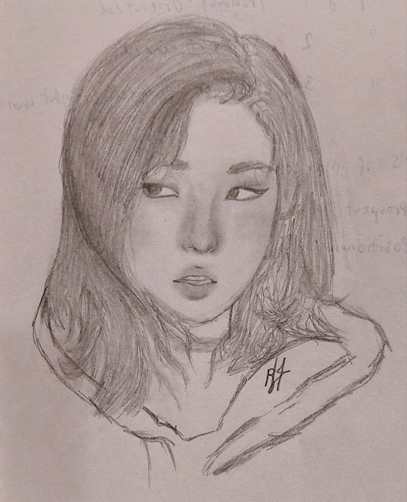
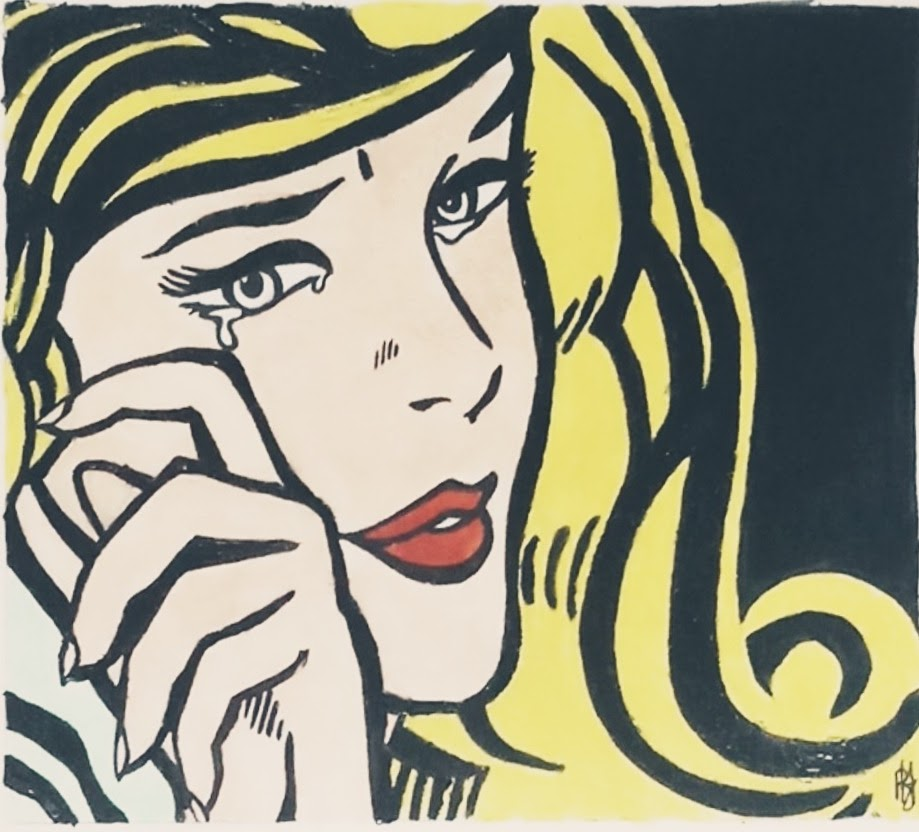
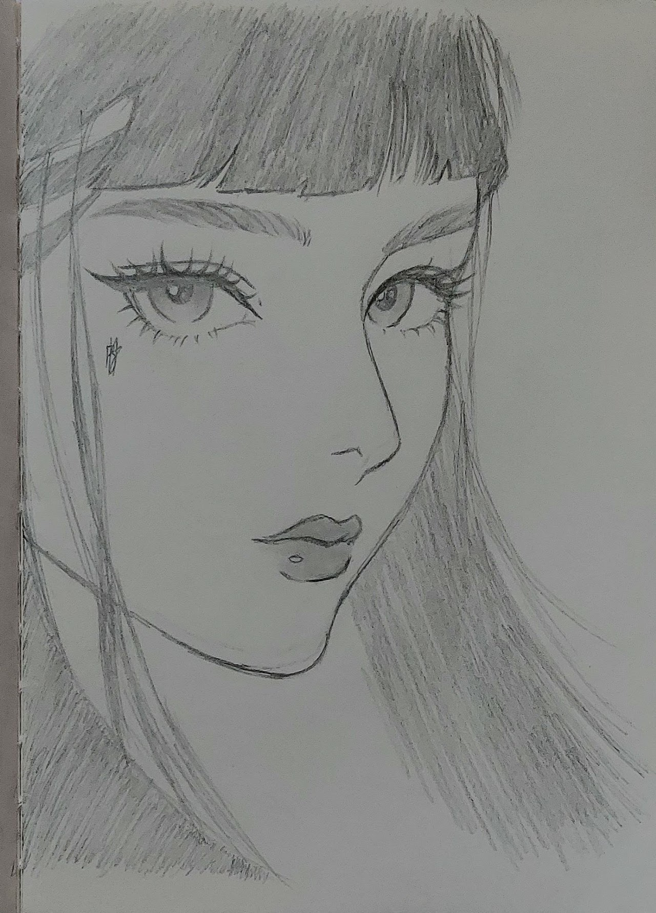

✮ ⋆ ˚｡𖦹 ⋆｡°✩ Passion Projects ✮ ⋆ ˚｡𖦹 ⋆｡°✩
These are some of my passion projects.



My name is Rehanie U. Hadjiomar. My tagline is “Your self is a Magnum Opus”. I am currently a 2nd year student at the University of the Philippines Open University, taking a Bachelor of Arts in Multimedia Studies. I finished my junior high school studies at Manggahan High School in Pasig City, and I graduated senior high school under the STEM program at the University of Santo Tomas Senior High School.
These are some of my passion projects.


